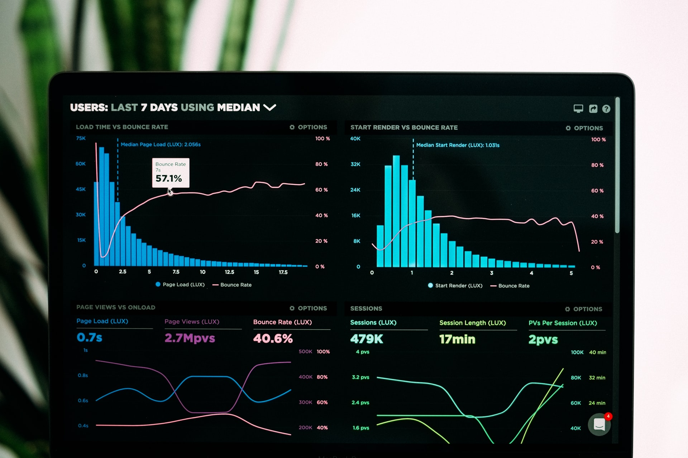

library(flexdashboard)
library(shiny)
Dashboards are a great way to demonstrate knowledge and engage decision makers. Their utility has made PowerBI and Tableau household names. And while these solutions do support R and Python scripts and visualizations, the Flexdashboard package seeks to compete. The Flexdashboard packages does this all in R with the simplicity of writing a R Markdown file.
Initial Setup
The setup is simple, you just need to download and load the Flexdashboard package. With the package installed, the easiest way to start is by creating a new R Markdown file using the Flexdashboard template. Loading the Shiny package is useful if you would like to use interactive plots, but it is not necessary.
The dashboard can be laid out by either columns or by rows, it doesn’t really make a difference. Just change the text of columns with rows in the following walk-through. A column is set up with “## Column” as the header. The size of the plot region can then be modified with “{data-width=”500”}” in the same header line. The next line should be the plot/area title, which is included with “### Plot Title” header. All that is left is to include a code chunk with your plot.
Sample Data
I decided to demonstrate different dashboard features with a data set from Open Canada about charitable donations. More information can be found here
download.file("https://www150.statcan.gc.ca/n1/tbl/csv/45100007-eng.zip", "donordata.zip")Sample Dashboard 1
The first dashboard was set up with the default columns layout. It includes an interactive bar chart, an interactive box plot and a pie chart. All the plot were created with GGplot2, the two plot were made interactive with the GGplotly function from the Plotly package. I created a pie chart to demonstrate the use of regular ggplots and because I recently read a complaint about GGplot2 for the creation of Pie charts on Reddit. In my opinion, Pie charts are not very good very conveying information.
Sample Dashboard 2
For the second dashboard, I used the row layout. The process is that same with no additional complications. The dashboard features an interactive Leaflet plot, an interactive histogram and data table using the GT package. The table was transformed with Pivot_Wider function to better fill the space.
Conclusions
The Flexdashboard package can be used to create nice looking dashboards with a great level of control. The plots can also include interactive elements. When compared to PowerBi or Tableau, there remains one major deficiency. These other dashboards contain a smart interactive filter which ties all the plots together. If you select a specific element in one plot for filtering, all other plots have the same filter applied to them. This is a major boon for understanding data and not a simple feature to develop in Flexdashboard. It remains an interesting package, but I would still rely on PowerBI or Tableau to create dashboards.
Photo by Luke Chesser on Unsplash